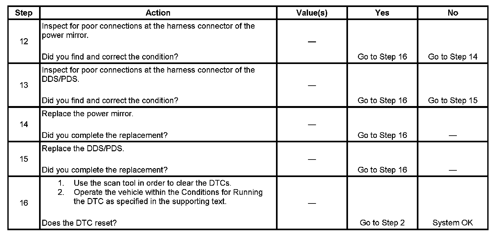

B1590
DTC B1580 or B1590
CIRCUIT DESCRIPTION
The driver door switch (DDS) and passenger door switch (PDS) receive mirror position signals from the mirror horizontal and vertical position sensors. These signals are used by the door switches for memory recall functions of the driver and passenger mirrors. The door switches command the mirror memory settings based upon the voltage level received back from the position sensors. Each door switch provides a 5-volt supply, a signal, and ground circuit for each of the position sensors. The horizontal and vertical position sensors are variable resistors that the door switches monitor voltage levels across. When a memory setting is recalled, the door switches command the mirror motors in the appropriate directions until the stored position sensor voltage levels are achieved. The DDS and PDS monitor the signal circuits to determine if the voltage level is out of range. For more detailed information concerning power mirror operation, refer to Outside Mirror Description and Operation (Heated Mirrors) Outside Mirror Description and Operation (Power Mirrors).
DTC DESCRIPTOR
This diagnostic procedure supports the following DTCs:
- DTC B1580 Mirror Horizontal Position Sensor Circuit
- DTC B1590 Mirror Vertical Position Sensor Circuit
CONDITIONS FOR RUNNING THE DTC
Battery voltage must be between 9-16 volts.
CONDITIONS FOR SETTING THE DTC
- A mirror position sensor signal voltage is below 0.5 volts for 2 seconds.
- A mirror position sensor signal voltage is above 4.5 volts for 2 seconds.
ACTION TAKEN WHEN THE DTC SETS
- The door switch will ignore the failed position sensor.
- The door switch will ignore memory set or recall for the mirrors.
- Manual mirror movements will be allowed.
CONDITIONS FOR CLEARING THE DTC
- When the condition responsible for setting the DTC no longer exists the DDS/PDS clears this current DTC and stores the DTC as a history DTC.
- The history DTC will clear after 50 ignition switch cycles without a failure or in response to a scan tool command.
DIAGNOSTIC AIDS
- If DTC B1580 and B1590 are both set, the low reference circuit may be open, or the 5-volt reference circuit may be open, short to ground or short to voltage.
- Thoroughly inspect the wiring and connectors. An incomplete inspection of the wiring and connectors may result in misdiagnosis causing part replacement with the reappearance of the malfunction. If an intermittent malfunction exists, refer to Testing for Intermittent Conditions and Poor Connections. Component Tests and General Diagnostics
TEST
Step 1 - Step 11:
Step 12 - Step 16:
